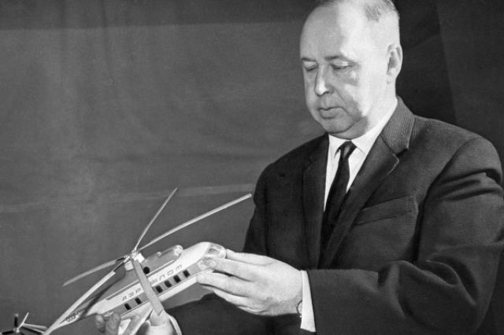
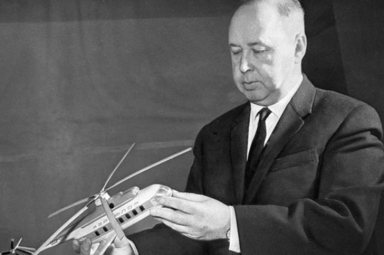
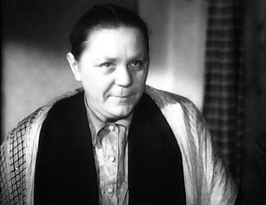
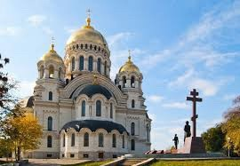
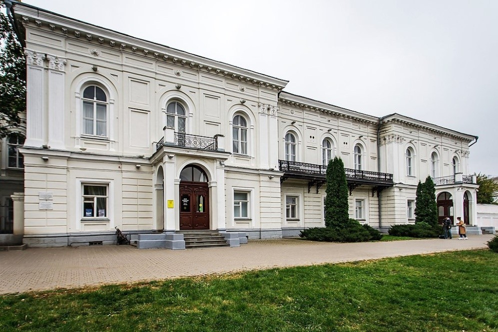

Миль Михаил Леонтьевич
главный конструктор опытного конструкторского бюро по вертолетостроению, доктор технических наук, профессор, лауреат Ленинской премии (1958) и Государственной премии СССР (1968), Герой Социалистического Труда.
Город Новочеркасск был заложен 18 мая (30-го по новому стилю) 1805 года Войсковым Атаманом Матвеем Ивановичем Платовым по проекту военного инженера генерал-лейтенанта Франца Деволана. Новая столица казачества – город Новый Черкасск строился по самым современным образцам европейской архитектуры того времени и одновременно по канонам казачьей культуры.


День Новочеркасска Новочеркасск отмечает день города в 3-ю субботу мая. На этот день, как правило, запланированы спортивные мероприятия, концерты и другие развлекательные мероприятия с небольшой численностью участников, которые пройдут во всех микрорайонах города, в ДК, школах, детсадах, парка и скверах. Будут и «новомодные» онлайн-мероприятия. Полная программа мероприятий будет опубликована позднее. Также на День города всегда проходит торжественное награждение новых почетных граждан Новочеркасска. Это мероприятие пройдет в театре.
В Новочеркасске насчитывается около 200 памятников истории и архитектуры из них 9 — федерального, около 60 — областного и более 100 — местного значения

